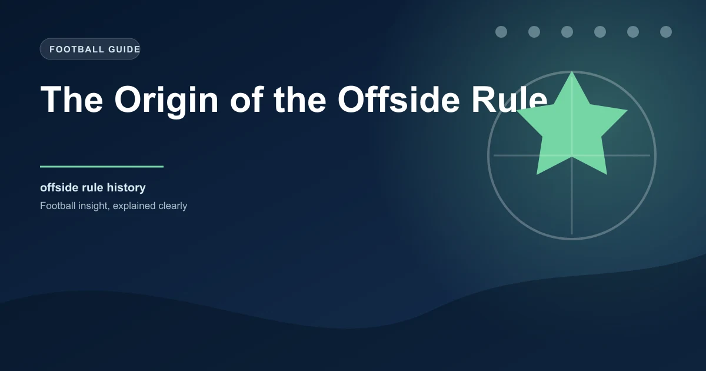

Few laws in football spark as much debate as the offside rule. Fans argue about it weekly, managers get sent off for protesting it, and entire match analyses revolve around a single flag. But where did this rule come from, and why does it exist?
The answer takes us back to the muddy fields of 19th-century England, where football was barely recognizable as the sport we watch today.
When football clubs first formed in England during the 1850s and 1860s, there was no offside rule at all. Players could stand wherever they wanted, including right next to the opposing goal. This created a strategy that modern fans would find absurd: teams would station one or two players permanently near the opponent's goal, waiting for a long kick.
The game devolved into a series of long hopeful balls kicked forward, with defenders scrambling back. There was very little passing, very little movement, and very little tactical depth. It was, by most accounts, pretty dull.
TheFA (Football Association), founded in 1863, recognized that the game needed structure. Without some restriction on player positioning, football would remain a kicking contest rather than becoming the nuanced tactical sport its founders envisioned.
The original offside law, written into the first FA rules in 1863, was strict by any standard. A player was in an offside position if they were closer to the opponent's goal line than the ball and fewer than three defenders (including the goalkeeper) were between them and the goal line.
This meant you needed at least three opposition players ahead of you to legally receive a pass. In practice, this made forward play extremely difficult. Attacks were slow, methodical, and heavily focused on dribbling rather than passing.
The original 1863 offside rule was based on Rugby School's rules, which the FA founders had adapted. It was even stricter than rugby's version at the time.
Some historians trace the offside concept even earlier, to Cambridge University in the 1860s. The Cambridge Rules, drafted in 1863, included an offside provision that predated the FA's version. These university-educated footballers understood that without positional restrictions, the game would lack tactical richness.
The Cambridge influence shaped the early FA rules significantly. Many of the original FA committee members were former Cambridge students, and they carried those principles into the first official code of football.
For over 60 years, the three-player rule dominated English football. But by the early 1920s, complaints were growing. Defensive teams had learned to exploit the rule by packing players forward, making it nearly impossible for attacking teams to play through passes. Goals were declining, and attendances were dropping.
In 1925, the FA made the most significant change to the offside rule in history: they reduced the requirement from three defenders to two. This single change transformed football forever.
Attacking play exploded. Teams could now use through balls and runs in behind without needing to beat three defenders. Goals increased dramatically, and the modern concept of a striker making runs off the last defender became possible.
| Period | Rule | Effect |
|---|---|---|
| 1863�1925 | 3 defenders required | Slow, dribble-heavy play |
| 1925�1990 | 2 defenders required | More goals, tactical evolution |
| 1990�2005 | 2 defenders (relaxed interpretation) | More attacking freedom |
| 2005�present | 2 defenders (revised body position) | VAR-assisted precision |
| 2023�present | VAR semi-automated offside | Millimeter accuracy |
The 1990 World Cup in Italy was, ironically, one of the most defensive tournaments in history. Despite the 1925 change, teams had once again figured out how to use the offside rule defensively, playing a high line and catching attackers offside repeatedly.
The International Football Association Board (IFAB), the body responsible for football's laws, responded by instructing referees to interpret the offside rule more leniently. The guidance was simple: if in doubt, don't flag offside. This led to more goals and more exciting football.
In 2005, IFAB refined the offside law further. Previously, any part of a player's body that could play the ball counted for offside. The 2005 change clarified that only body parts with which a player can legally play the ball (feet, legs, torso, head) were considered. Hands and arms were explicitly excluded.
This was a practical change. Before 2005, a player could be flagged offside because their arm was ahead of the second-last defender, even though they couldn't legally play the ball with their arm anyway.
The introduction of VAR (Video Assistant Referee) technology in 2018 brought the offside rule into the age of precision. By 2022, FIFA had deployed semi-automated offside technology at the World Cup in Qatar, using limb-tracking cameras and AI to determine offside positions in real time.
This technology can detect offside by millimeters, which has created its own controversies. The "clear and obvious" margin that fans expect doesn't always align with what the technology shows. A toenail offside is still offside under current law.
In 2023, FIFA began trialing a revised offside interpretation where a player would only be offside if their entire body was beyond the second-last defender, rather than any part. This "thicker line" approach aims to give the advantage back to attackers.
Understanding the offside rule isn't just trivia for football nerds. It directly impacts betting markets. A team that plays a high defensive line will concede more offside calls, which affects corner counts, free kick locations, and even the timing of goals.
Teams with pacey forwards who time their runs well against high lines create more scoring chances. Meanwhile, teams that sit deep and play offside trap effectively reduce the quality of opportunities opponents create.
When analyzing a match, check how often each team catches opponents offside and how often they're caught. Teams that consistently play the offside trap successfully tend to concede fewer high-quality chances, which can affect over/under goal markets.
Premier League data since VAR introduction shows roughly 25�30 offside calls per match week across all games. Before VAR, the figure was similar, but the accuracy of those calls was significantly lower. Studies estimated that pre-VAR offside decisions were correct only about 80% of the time. VAR has pushed that accuracy above 97%.
The average number of goals per Premier League match has remained relatively stable since the 2018 VAR introduction, hovering around 2.7�2.8 per game. This suggests the technology hasn't dramatically changed outcomes, just improved the fairness of close calls.
What started as a straightforward attempt to prevent goal-hanging in 1863 has become one of the most technologically advanced laws in all of sport. The offside rule continues to evolve because football continues to evolve, and as long as defenders find new ways to exploit it and attackers find new ways to beat it, the debate will never end.
For football fans and bettors alike, understanding the offside rule's history gives you a deeper appreciation for why the game looks the way it does today and where it might be heading next.
Check our free daily football predictions for every match of the season.
Generate optimized accumulator combinations from today's AI-powered predictions. Set your target odds and get instant ticket suggestions.
Free Ticket Builder →Catch live matches as they happen. Get golden tips and in-play alerts.
In-Play Tips